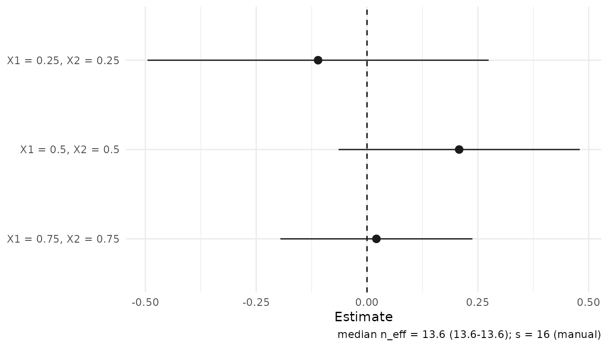
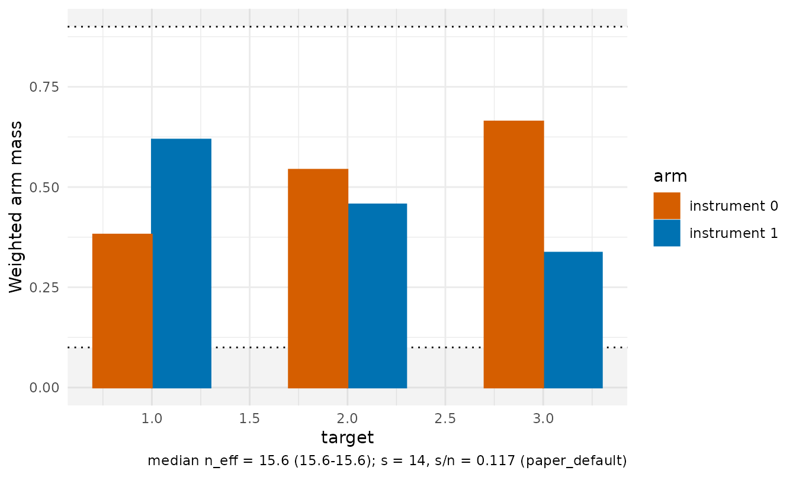

Conditional LATE from supplied nuisance predictions
Source:vignettes/conditional-late.Rmd
conditional-late.Rmdclate_dnn() estimates conditional effects among
compliers using a binary instrument A, binary treatment
D and supplied nuisance predictions. The paper
defines the causal target and identifying assumptions. Reporting
covariates can be a subset of the controls used to obtain the nuisance
predictions.
Exactly identical reporting-covariate rows share their block’s
average weight in both the reduced form and first stage, even when their
outcomes or nuisance predictions differ. Each deletion removes the
actual row and redistributes its remaining block’s n-1
weight-table mass over the survivors. This is a ratio of two weighted
signal averages, not an average of individual ratios. The package warns
that the block-averaging modification is outside the paper’s theory. See
the weight
guide.
Fit from a data frame
This synthetic example uses oracle predictions. The five nuisance vectors are the instrument propensity and the outcome/treatment means in each instrument arm. Arm indices refer to the instrument, not treatment.
demo <- clate_demo_data(n = 120, seed = 20261017, heterogeneous = TRUE)
d <- demo$data
targets <- rbind(c(.25, .25), c(.5, .5), c(.75, .75))
fit <- clate_dnn(
data = d, x_cols = c("X1", "X2"), X0 = targets,
y_col = "Y", d_col = "D", a_col = "A", e_col = "e_oracle",
m_y0_col = "m_y0_oracle", m_y1_col = "m_y1_oracle",
m_d0_col = "m_d0_oracle", m_d1_col = "m_d1_oracle",
training = "oracle", row_ids = d$row_id, tuning_mode = "grid",
return = c("W", "dx")
)
summary(fit)$coefficients
#> estimate std.error statistic p.value conf.low conf.high
#> target_1 -0.09891197 0.1918865 -0.5154713 0.6062237 -0.47500253 0.2771786
#> target_2 0.20115037 0.1265871 1.5890271 0.1120543 -0.04695583 0.4492566
#> target_3 0.04455010 0.1014209 0.4392594 0.6604736 -0.15423127 0.2433315The default fit is retained while the grid compares alternative
orders; it does not select a preferred candidate. training
records provenance and fits no models. In an application, merge external
predictions onto the observations using stable IDs before fitting. IDs
supplied to the estimator cannot detect a prediction vector that was
independently reordered.
For matrix inputs, pass the same vectors directly. Here the order is held at the fitted default so the two calls can be compared:
X <- as.matrix(d[c("X1", "X2")])
fit_matrix <- clate_dnn(
X = X, X0 = targets, Y = d$Y, D = d$D, A = d$A,
e = d$e_oracle, m_y0 = d$m_y0_oracle, m_y1 = d$m_y1_oracle,
m_d0 = d$m_d0_oracle, m_d1 = d$m_d1_oracle,
s = fit$meta$s, se = FALSE
)
data.frame(data_frame = coef(fit), matrix = coef(fit_matrix))
#> data_frame matrix
#> target_1 -0.09891197 -0.09891197
#> target_2 0.20115037 0.20115037
#> target_3 0.04455010 0.04455010Tibbles use the data-frame interface. All reporting covariates and
prediction vectors must be finite and aligned. Raw instrument
propensities and treatment predictions must lie in [0,1].
Propensities are clipped with clip = 1e-8 by default;
clipping does not create overlap.
For a genuinely one-sided design, one_sided = TRUE
permits omission of m_d0; observed treatment must satisfy
D <= A. The observed check cannot establish the
structural restriction. See ?clate_dnn for its input
rules.
Read the first stage alongside the effect
fit$components
#> numerator denominator
#> [1,] -0.03687344 0.3727905
#> [2,] 0.10219813 0.5080683
#> [3,] 0.03033088 0.6808264
diagnostic <- as.data.frame(diagnostics(fit))
diagnostic[, c("target_id", "denominator", "denominator_se",
"ratio_status", "wald_available")]
#> target_id denominator denominator_se ratio_status wald_available
#> target_1 target_1 0.3727905 0.2335520 ok TRUE
#> target_2 target_2 0.5080683 0.2577646 ok TRUE
#> target_3 target_3 0.6808264 0.1880182 ok TRUEThe numerator is the adjusted reduced form and the denominator is the
adjusted first stage. Their paired covariance enters ratio uncertainty.
vcov(fit) returns marginal ratio covariance matrices, one
per profile; it does not supply cross-profile covariance. These are
estimator-scale variances and must not be divided by effective sample
size again.
An exactly zero first stage leaves the ratio undefined; finite negative first stages retain a signed ratio. A finite estimate can have unavailable Wald bounds. Inspect statuses and components before interpreting the output. Weak local first stages can make Wald intervals unreliable. The inference guide explains these fields, covariance scales and the separate experimental confidence-set helper.
Supply two signals directly
If another workflow constructs the augmented signals, localize their
means with affine_ratio_dnn(). The package’s signal
constructor gives the same inputs explicitly:
signals <- iv_augmented_signals(
Y = d$Y, D = d$D, A = d$A, e = d$e_oracle,
m_y0 = d$m_y0_oracle, m_y1 = d$m_y1_oracle,
m_d0 = d$m_d0_oracle, m_d1 = d$m_d1_oracle
)
ratio <- affine_ratio_dnn(
X = X, X0 = targets,
numerator = signals$phi_y, denominator = signals$phi_d,
s = fit$meta$s
)
data.frame(clate = coef(fit), paired_signals = coef(ratio))
#> clate paired_signals
#> target_1 -0.09891197 -0.09891197
#> target_2 0.20115037 0.20115037
#> target_3 0.04455010 0.04455010Both components use common weights. Average the two signals before dividing; observation-level signal ratios define a different statistic. Generic paired signals carry no instrument record for overlap plots. Use the nuisance-based CLATE fit when those diagnostics are needed.
Plot and reuse the fit
With ggplot2 installed:
plot(fit, style = "forest")
plot_overlap(fit, type = "mass")
Weight/kernel and influence views also use the shared plotting API.
Keep "W" for weight panels and "dx" for
distance-based kernels. See Visualising
fits for plot controls.
Extract one grid candidate or evaluate a new profile using retained signals:
candidate <- candidate_fit(fit, 1L)
coef(candidate)
#> target_1 target_2 target_3
#> -0.07448888 0.17443055 0.09002873
predict(fit, x0 = c(.6, .4), interval = "confidence")
#> fit lwr upr
#> [1,] -0.09169375 -0.5886832 0.4052957Neither operation refits nuisance learners. Saved fits contain
observation-level numeric values and inherit the data’s sharing
restrictions. predict() relocalizes those frozen signals;
it does not predict outcomes for new people. For order controls, see Kernel-order tuning. For result
fields, see Notation and
conventions.